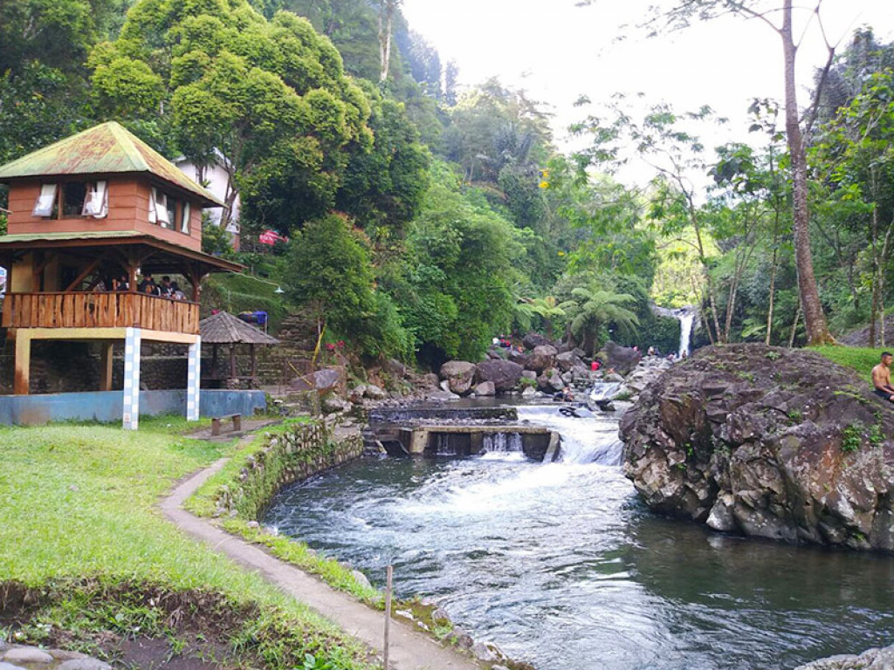

Danau Singkarak
Danau Singkarak adalah danau yang membentang di dua kabupaten yang terdapat di provinsi Sumatera Barat, Indonesia, yaitu kabupaten Solok dan kabupaten Tanah Datar. Danau ini memiliki luas 107,8 km² dan merupakan danau terluas kedua di pulau Sumatra setelah Danau Toba di Sumatera Utara. Danau ini merupakan hulu dari sungai atau Batang Ombilin. Namun sebagian air danau ini dialirkan melalui terowongan menembus Bukit Barisan ke Batang Anai untuk menggerakkan generator PLTA Singkarak di dekat Lubuk Alung, kabupaten Padang Pariaman.

Danau Singkarak merupakan salah satu hasil dari proses tektonik yang dipengaruhi oleh Sesar Sumatra. Danau ini adalah bagian dari Cekungan Singkarak-Solok yang termasuk di antara segmen dari Sesar Sumatra.
Candi Prambanan
Candi Prambanan (Jawa: ꦕꦟ꧀ꦝꦶꦥꦿꦩ꧀ꦧꦤꦤ꧀, translit. Caṇḍi Prambanan) adalah bangunan candi bercorak agama Hindu terbesar di Indonesia yang dibangun pada abad ke-9 Masehi. Candi yang juga disebut sebagai Rara Jonggrang ini dipersembahkan untuk Trimurti, tiga dewa utama Hindu yaitu dewa Brahma sebagai dewa pencipta, dewa Wisnu sebagai dewa pemelihara, dan dewa Siwa sebagai dewa pemusnah. Berdasarkan prasasti Siwagrha nama asli kompleks candi ini adalah Siwagrha (bahasa Sanskerta yang bermakna 'Rumah Siwa'), dan memang di garbagriha (ruang utama) candi ini bersemayam arca Siwa Mahadewa setinggi tiga meter, dikarenakan aliran Syaiwa yang mengutamakan pemujaan dewa Siwa di candi ini.
Candi Prambanan merupakan candi Hindu yang terbesar di Indonesia. Sampai saat ini belum dapat dipastikan kapan candi ini dibangun dan atas perintah siapa, namun kuat dugaan bahwa Candi Prambanan dibangun sekitar pertengahan abad ke-9 oleh raja dari Wangsa Sanjaya, yaitu Raja Balitung Maha Sambu.
Air Terjun Sipiso Piso
Air Terjun Sipisopiso atau Sipiso-piso adalah sebuah air terjun yang berada di Desa Tongging, Kecamatan Merek, Kabupaten Karo, Provinsi Sumatera Utara, Indonesia. Air Terjun Sipisopiso memiliki ketinggian hingga 120 meter[1] dan mengucur deras membentuk garis vertikal sempurna. Sehingga Air Terjun Sipisopiso masuk dalam air terjun tipe Plunge. Air Terjun Sipisopiso berada di bibir kaldera raksasa Danau Toba serta terbentuk pada aliran Sungai Pajanabolon yang merupakan salah satu sungai menyuplai air ke Danau Toba. Air Terjun Sipisopiso berada di ketinggian sekitar 1.300 meter di atas permukaan air laut. Nama Sipisopiso diambil dari nama sebuah Gunung yang berada tepat di timur laut Air Terjun Sipisopiso. Gunung yang juga disebut Gunung Sipisopiso ini memiliki ketinggian sekitar 1.860 meter di atas permukaan air laut.
Air Terjun Sipisopiso berada di bibir kaldera raksasa Danau Toba serta terbentuk pada aliran Sungai Pajanabolon yang merupakan salah satu sungai menyuplai air ke Danau Toba.